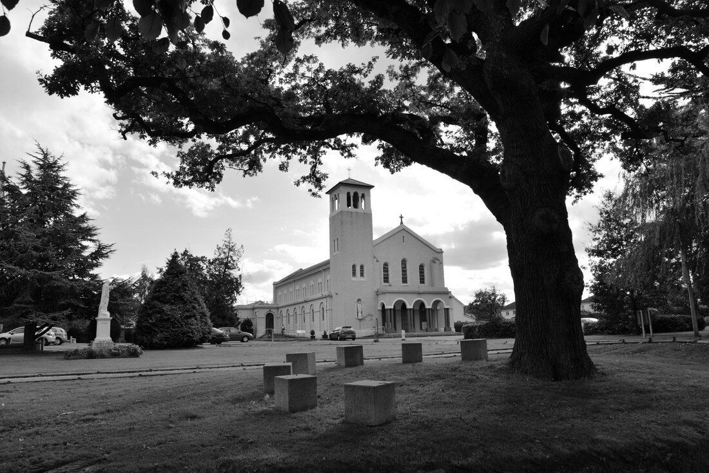
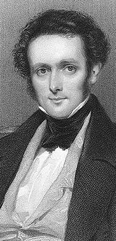
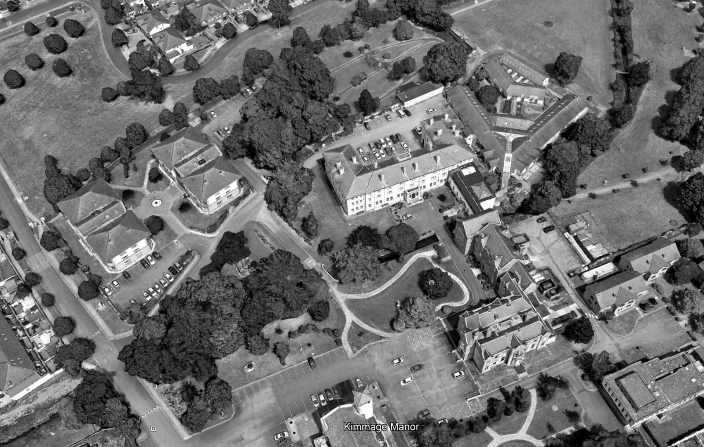

Stop 7 of 16 · Kimmage
Kimmage Manor
A Victorian MP’s house, now a mission centre, built over the stream.
1600s to 1800s
In 1641 the lands of Kimmage, Terenure and Milltown all belonged to Peter Barnewall, and there was a castle in good repair at Kimmage.
Owners and tenants came and went. Rocque’s map from the mid-18th century shows extensive buildings where the Manor House stands today.
Frederick Shaw
In 1829 Frederick Shaw and his family came to live at Kimmage, in an L-shaped part of the present manor facing today’s Mission House. Sir Frederick lived there until his death in 1876.
A year after moving in, Shaw was elected MP for Dublin City, in 1830, and was re-elected in 1832. He then sat for Dublin University from 1832 to 1848, and became a Privy Councillor in 1835. He was regarded as one of the finest speakers and debaters in Parliament. One of his best-known speeches, in 1834, opposed Daniel O’Connell’s motion for a select committee into Baron Smith, who had been accused of bringing politics into his charge to a grand jury.
Bridging the Poddle
The river enters the grounds from the west and is then piped under later additions to the manor. The manor later became a house of the Holy Ghost Fathers, and then the Kimmage Mission Institute and Development Studies Centre.
The upstream sluice keeps the flow here under control and limits the risk of flooding to the buildings, with most of the water sent around the north of the site.
Watch and read


